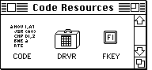
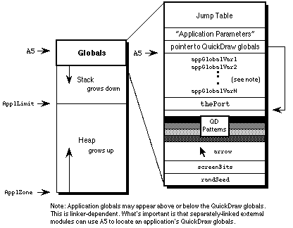
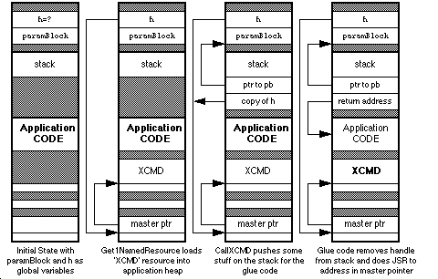

|
|
This Technical Note discusses many of the issues related to stand-alone code
modules. This Note is by no means a completely original work, as the author
borrows freely from the work of Keith Rollin, Mark Baumwell, and Jim
Friedlander.
[Oct 01 1989]
|
How to Recognize a Stand-Alone Code When You See One
What Stand-Alone Code Looks Like to the Naked Eye
Stand-alone code is program code which does not enjoy the full status of an
application. A stand-alone code module exists as a single Macintosh resource
and consists almost entirely of microprocessor-executable object code, and
perhaps also some header data and other constants used by the executable
portion of the module. Code-type resources are most easily identifiable in the
ResEdit 2.0 resource picker. Most of these closely-related resources are
indicated by an icon containing a stylized segment of assembly-language source
code.

Figure 1. ResEdit 2.0 Icons Signifying Code-Type Resources
Although 'CODE' resources are not stand-alone code modules (they are
segments of a larger application), they are similar because they contain
executable code and so they have the same code-type icon. Driver resources are
a special case of stand-alone code resources, and they have a different icon in
the ResEdit picker, reminiscent of the Finder icon for a desk accessory
suitcase, because the code of a desk accessory is stored as a 'DRVR'
resource. The icon for an 'FKEY' is also a bit different, resembling
a function key, naturally.
Table 1 is a fairly extensive list of the currently-defined code-type
resources. Many are of interest primarily at a system software level; those
stand-alone code resources most commonly created by application-level
programmers are noted in boldface. Of course, developers are always free to
define new resource types for custom stand-alone modules. 'CUST' is
commonly used, as in some of the examples at the end of the discussion.
Table 1 Assorted Code Resource Types
The most common use of stand-alone code is to supplement the standard features
provided by the Macintosh Toolbox and operating system. Most of the resource
types listed in Table 1 define custom windows, controls, menus, lists, and
responses to user input. In this respect, they are slaves to particular
Toolbox managers or packages and very often contained within the resource fork
of an owner application. Other examples of stand-alone code are more useful as
application extensions like HyperCard 'XCMD' and 'XFCN'
extensions.
'DRVR', 'INIT', and 'cdev' resources are more autonomous
examples of stand-alone code. These allow programmers to write code which may
be executed automatically when the system starts up and code which adds special
features to the operating system or provides control of special-purpose
peripherals and system functions. The temptation here is to perform functions
generally reserved for full-blown applications, such as use of QuickDraw. For
a number of reasons, this is a non-trivial endeavor, and is the subject of much
of this discussion.
How Applications Are Special
Macintosh applications can be almost any size, limited mainly by disk space and
RAM size. The actual program code is generally divided up into a number of
segments, each less than 32K in size so the amount of memory required to
execute a program may be less than the size of the program itself. The Segment
Loader, documented in Inside Macintosh, Volume II, controls the loading
and unloading of segments. It ensures that the necessary segments of an
application are read into the application heap when needed and allows
temporarily unneeded sections to be purged, making room for others.
All of this activity occurs in and depends upon a somewhat mysterious
construction called an A5 world. It is so called because the
A5 register of the microprocessor points indirectly to several key
data structures used by the Segment Loader and the application itself. Most
Macintosh programmers are at least vaguely aware of the significance of
A5 in the Macintosh environment. Many even know that it is a handy
pointer to the application and QuickDraw global variables, or at least points
in the right general direction. Less widely known is how an A5 world
is constructed, and more to the point, how to build one from scratch if
necessary.
This may become necessary because higher-level language compilers like MPW
Pascal and C automatically generate A5-relative addressing modes to
refer to global variables, including QuickDraw globals. The linker then
resolves the actual offsets. For example, the ubiquitous
compiles into something equivalent to the following:
PEA thePort(A5),-(SP) ; push a pointer to QuickDraw's thePort variable
|
Before this is executable, the linker must determine exactly what offset
represents thePort. With this value, it patches the object code and
creates the code found in the final application. The reader may infer that an
application depends on someone else to set up A5 with a meaningful
value before program execution begins. This is true, and understanding how
this process normally occurs for an application is of paramount importance when
writing stand-alone code which needs application-like functionality. Briefly,
the Segment Loader allocates space for an A5 world for each
application as part of its launch process. Library code is automatically
linked to the front of every application, and this sets up A5 to point
to the global variable space. The application code begins executing only after
all of this preliminary setup is complete.

Figure 2. A Hitchhiker's Guide to the A5 World
How Stand-Alone Code Is Different
Stand-alone code, unlike an application, is never launched. It is simply
loaded then executed and possesses no A5 world of its own.
Stand-alone code therefore cannot easily define global variables. No space is
allocated for globals and A5 either belongs to a real application or
is completely meaningless. References to global variables defined by the
module usually succeed without even a warning from the linker, but also
generally overwrite globals defined by the current application. References to
global variables defined in the MPW libraries, like QuickDraw globals, generate
fatal link errors.
Link -t INIT -c '????' -rt INIT=128 -ra =resLocked -m PLAYZOO [[partialdiff]]
SampleINIT.p.o [[partialdiff]]
-o SampleINIT
### Link: Error: Undefined entry, name: (Error 28) "thePort"
Referenced from: PLAYZOO in file: SampleINIT.p.o
### Link: Errors prevented normal completion.
### MPW Shell - Execution of SampleINIT.makeout terminated.
|
That's not very helpful and not very much fun. So what if a stand-alone code
resource needs to use QuickDraw or its associated globals like
screenBits? What if a stand-alone module needs to call some
"innocuous" routine in the Macintosh Toolbox which implicitly assumes the
existence of a valid A5 world? _Unique1ID, which calls the
QuickDraw _Random trap, falls into this category, for instance. An
'XCMD' might be able to "borrow" HyperCard's globals, but an
'INIT' has no such alternative; it may need to have its own
A5 world.
There are a couple more considerations. Stand-alone code resources are not
applications and are not managed by the Segment Loader, so they cannot be
segmented into multiple resources like applications. Stand-alone code
resources are self-contained modules and are usually less than 32K in size. As
popular belief would have it, code resources cannot be more than 32K in
size. This is not necessarily true, and although some linkers, especially
older ones, enforce the limit all the same, the absolute limitation is that the
original Motorola MC68000 microprocessor is not capable of expressing relative
offsets which span more than 32K.
A code segment for a 68000-based Macintosh may be any reasonable length, so
long as no relative offsets exceed 32K. There are ways to get around this
limit even on 68000-based machines, while the MC68020 and later members of the
680x0 family have the ability to specify 32-bit offsets, dissolving the 32K
barrier completely as long as the compiler is agreeable. To remain compatible
with 68000-based machines, however, and to maintain manageable-sized code
segments the 32K "limit" is a good rule of thumb. If a stand-alone code module
gets much larger than this, it is often because it's trying to do too much.
Remember that stand-alone code should only perform simple and specific tasks.
Writing Your First Stand-Alone Module
Each type of stand-alone code has its own idiosyncrasies. It is difficult to
say which type is the easiest to construct. It is best to address each major
type individually, but a simple 'INIT' may be the best place to start.
Most programmers are pretty familiar with the concept of what an
'INIT' is and how it is used, and its autonomy is a big plus--it is
not necessary to write and debug a separate piece of code or a HyperCard stack
in which to test the stand-alone module. (This would be necessary for a
'CDEF' or an 'XCMD', for example.) Stand-alone code is often
written in assembly language, but high-level languages usually serve just as
well. This first example is written in MPW Pascal, in keeping with the
precedent set by Inside Macintosh.
SampleINIT is a very simple 'INIT' which plays each of the sounds
(resources of type 'snd ') in the System file while the Macintosh
boots. It's kind of fun, not too obnoxious, and also not particularly robust.
All 'snd ' resources should be unlocked, purgeable, Format 1
sounds like the four default system sounds. Also be sure to name this file
SampleINIT.p to work with the SampleINIT.make file which follows. The main
subroutine is PlayZoo, in honor of the monkey and dogcow sounds in the
author's System file.
UNIT SampleINIT; {Pascal stand-alone code is written as a UNIT}
INTERFACE
USES
Types, Resources, Sound;
{VAR
cannot define any globals...well, not yet anyway}
PROCEDURE PlayZoo;
IMPLEMENTATION
PROCEDURE PlayZoo;
VAR
numSnds, i : INTEGER;
theSnd : Handle;
playStatus : OSErr;
BEGIN
numSnds := CountResources('snd ');
FOR i := 1 TO numSnds DO BEGIN
theSnd := GetIndResource('snd ',i);
IF theSnd <> NIL THEN
playStatus := SndPlay(NIL,theSnd,FALSE);
END;
END;
|
Following is the file SampleINIT.make to control the build process:
# File: SampleINIT.make
# Target: SampleINIT
# Sources: SampleINIT.p
SampleINIT [[florin]][[florin]] SampleINIT.make SampleINIT.p.o
Link -t INIT -c '????' -rt INIT=128 -ra =resLocked [[partialdiff]]
-m PLAYZOO
SampleINIT.p.o [[partialdiff]]
-o SampleINIT
SampleINIT.p.o [[florin]] SampleINIT.make SampleINIT.p
|
That's all there is to it, but even in such a simple example as this, there are
a number of extremely important points to highlight. By understanding every
nuance of this example, one moves a long way toward understanding everything
there is to know about stand-alone code.
Consider first the form of the 'INIT' code itself. It is defined as a
UNIT rather than a PROGRAM. This is important, because
Pascal programs are applications and require the Segment Loader,
preinitialization of A5, and all the things which make an application
special. A Pascal unit, like a stand-alone code resource, is simply a
collection of subroutines. A similar assembly-language 'INIT' would
define and export a PROC. In C, this particular 'INIT' would
be a single function in a source file with no main() function.
Pascal programmers may recognize that a unit allows the definition of global
variables (as between the USES and PROCEDURE clauses in the
INTERFACE section previously documented). Typically, when a unit's
object code is linked with a host application, the linker allocates storage for
these globals along with the application globals and resolves all necessary
A5 references. Stand-alone code modules are never linked with an
application, however, and the linker has no way to resolve these references.
This makes the linker very unhappy. The easiest way to make the linker happy
is to follow the example and define no globals. If globals are really
necessary, and they may well be, read on.
Next examine how SampleINIT is linked. To be recognized as a startup document,
a "system extension" (as an 'INIT' is called in System 7.0 parlance)
must have the file type "INIT". The options -rt and -ra
respectively specify that the code resource is of type 'INIT'
(ID=128), and that the resource itself is locked. This is a very important
idiosyncrasy of the 'INIT' because it is not automatically locked when
loaded by the system and might otherwise attempt to move during execution.
Hint: this would be very bad.
Finally, PlayZoo is specified as the main entry point by the -m
option. When written in Pascal, the entry point of a module is the first
compiled instruction. C is a little pickier and demands the main entry point
option to override the default entry point (which performs run-time
initialization for applications). It is important to remember that the linker
does not move the entry point specified by -m to the front of the
object file--that is the programmer's responsibility. Specification of this
option primarily helps the linker remove dead, unused code from the final
object module. In short, don't leave home without it. Note that the linker is
case sensitive with respect to identifiers, while the Pascal compiler converts
them to all uppercase. It is necessary therefore (in this example) to specify
the name of the entry point to the linker in all uppercase characters. If
PlayZoo were written in C, which is also case-sensitive, the
identifier would be passed to the linker exactly as it appeared in the source
code.
For additional examples of stand-alone code, refer to the end of this Note.
There are currently a few examples of types of stand-alone code, some of which
illustrate the advanced topics discussed in the following sections.
The next area to investigate is how to get around the restrictions on globals
in stand-alone code. The first and simplest solution easily conforms to all
compatibility guidelines, and that is to avoid using globals altogether. There
often comes a time, however, when the use of a global seems unavoidable. The
global variable requirements of stand-alone code segments vary, naturally, and
there are a number of possible scenarios. Some involve creating an A5
world and others do not. It's best to start with the simplest cases, which do
not.
Back to top
Oh, I Have Slipped the Surly Bonds of the Linker . . .
. . . And Have Hung Like a Leach on My Host Application
Often a stand-alone code segment needs the QuickDraw globals of the current
application, for whom it is performing a service. A control definition
function ('CDEF') is an example. Its drawing operations assume a
properly-initialized QuickDraw world, which is graciously provided by the
application. Most QuickDraw calls are supported and no special effort is
required. One limitation, however, is that explicit references to QuickDraw
globals like thePort and screenBits are not allowed. The
linker cannot resolve the offsets to these variables because it does not
process a 'CDEF' (or any other stand-alone module) along with a
particular application. Fortunately the solution is simple, if not entirely
straightforward.
Since the structure of the QuickDraw global data is known, as is its location
relative to A5, stand-alone code executing as a servant to an
application can reference any desired QuickDraw global indirectly. The
following code is an example of how a stand-alone unit can make local copies of
all the application QuickDraw globals. It uses A5 to locate the
variables indirectly, rather than making explicit symbolic references which the
linker is not capable of resolving. Figure 2, presented earlier, may be
helpful in understanding how this code works.
UNIT GetQDGlobs;
INTERFACE
USES
Types, QuickDraw, OSUtils;
TYPE
QDVarRecPtr = ^QDVarRec;
QDVarRec = RECORD
randSeed : Longint;
screenBits : BitMap;
arrow : Cursor;
dkGray : Pattern;
ltGray : Pattern;
gray : Pattern;
black : Pattern;
white : Pattern;
thePort : GrafPtr;
END;
PROCEDURE GetMyQDVars (VAR qdVars: QDVarRec);
IMPLEMENTATION
PROCEDURE GetMyQDVars (VAR qdVars: QDVarRec);
TYPE
LongPtr = ^Longint;
BEGIN
{ Algorithm:
1. Get current value of A5 with SetCurrentA5.
2. Dereference to get address of thePort.
3. Perform arithmetic to determine address of randSeed.
4. By assignment, copy the QD globals into a local
data structure. }
qdVars := QDVarRecPtr(LongPtr(SetCurrentA5)^ - (SizeOf(QDVarRec)-
SizeOf(thePort)))^;
END;
|
Extensible Applications
Some applications are intended to be extensible and provide special support for
stand-alone code segments. ResEdit for instance, uses 'RSSC' code
resources to provide support for custom resource pickers and editors. If a
graphical editor is needed to edit a custom resource type, such as an 8 x
64-pixel icon, separately compiled and linked extension code can be pasted
directly into the application's resource fork. ResEdit defines interfaces
through which it communicates with these resources. In many cases, this degree
of support and message passing can preempt the need to declare global variables
at all. The ResEdit interfaces are part of the official ResEdit package
available from APDA. The MacsBug 'dcmd' is another instance of
extension code with support for globals built in. A 'dcmd' specifies
in its header how much space it needs for global variables and MacsBug makes
room for them.
HyperCard provides high-level support for its 'XCMD' and
'XFCN' extension resources. Callback routines like SetGlobal
and GetGlobal provide extension code with a convenient mechanism for
defining variables which are global in scope, yet without requiring the deadly
A5-relative references normally associated with global variables. The
HyperCard interfaces are included with MPW and are called HyperXCmd.p in the
Pascal world, or HyperXCmd.h for C programmers.
In cases where an application provides special support for extensions, the
extension writer should take advantage of this support as much as possible.
Things can get complicated quickly when no support for globals is provided or
when built-in support is not used, and there's really no reason to be a
masochist. The A5-world techniques described later in this Note
usually are not necessary and should be considered extraordinary. Also, when
writing an application, it is probably worth considering whether extensibility
is useful or desirable. With the move toward object-oriented programming and
reusable code, demand for extension module support is growing. Support for
extension modules can rarely be tacked on as an afterthought, and it is worth
looking at how ResEdit, HyperCard, and Apple File Exchange support modular code
when considering similar features. Foresight and planning are indispensable.
Calling Stand-Alone Code from Pascal
Before moving on it may be helpful to look at how one extensible application
calls stand-alone code, using HyperCard as an example. The first thing to do
is establish some standard means of communication. HyperCard uses a
clearly-defined parameter block, as defined in HyperXCmd.p.
XCmdPtr = ^XCmdBlock;
XCmdBlock = RECORD
paramCount: INTEGER;
params: ARRAY [1..16] OF Handle;
returnValue: Handle;
passFlag: BOOLEAN;
entryPoint: ProcPtr; {to call back to HyperCard}
request: INTEGER;
result: INTEGER;
inArgs: ARRAY [1..8] OF LONGINT;
outArgs: ARRAY [1..4] OF LONGINT;
|
An 'XCMD' procedure, like an 'INIT', is written, compiled,
and linked as a separate unit. Its prototype may be imagined something like
this:
PROCEDURE MyXCMD (pb: XCMDPtr);
|
Since MyXCMD is not linked with HyperCard, however, the example
declaration does not appear in the HyperCard source code. The prototype only
defines how the external module expects to receive its parameters. The host
application, HyperCard, is responsible for loading the module and implementing
the proper calling conventions.
When calling an 'XCMD', HyperCard first loads the resource into memory
and locks it down. It then fills in the parameter block and invokes the
'XCMD'. Notice that the extension module is loaded by its resource
name. This is common for extensible applications, since it avoids resource
numbering conflicts. Since HyperCard is written in Pascal, the sequence might
look something like this.
theHandle := Get1NamedResource('XCMD', 'MyXCMD');
HLock(theHandle);
WITH paramBlock DO
BEGIN
{ fill it in }
END;
CallXCMD(@paramBlock, theHandle);
|
This also looks a little unwieldy. To fully understand a high-level calling
sequence for stand-alone code, a working knowledge of parameter passing
conventions and the ability to read code at the assembly-language level is very
helpful. Some amount of glue code is almost always required, as illustrated by
CallXCMD. After Pascal places a pointer to the parameter block and a
handle to the 'XCMD' on the stack, it executes some assembly-language
glue represented by three inline opcodes. The glue code finds the
'XCMD' in memory and jumps to it using the handle on the stack. To
accomplish this, it pulls the handle off of the stack, dereferences it to
obtain a pointer to the 'XCMD' and performs a JSR to the
indicated address. The pointer to the parameter block is left on the stack for
the 'XCMD'.
PROCEDURE CallXCMD (pb: XCMDPtr; xcmd: Handle);
INLINE $205F, { MOVEA.L (A7)+,A0 pop handle off stack }
$2050, { MOVEA.L (A0),A0 dereference to get address of XCMD }
$4E90; { JSR (A0) call XCMD, leaving pb on stack }
|
Figure 3 illustrates the state of the A5 world at four critical phases
of the 'XCMD' calling sequence. Boldface indicates approximately
where the program counter is pointing, or what code is executing at that
moment. The easiest way to read the diagram is to look for features which
change from one state to the next. Note in the last state the 'XCMD'
knows how to find its parameter block because the stack pointer (A7)
initially points to the return address and a pointer to the parameter block is
located four bytes above that. If the 'XCMD' is written in a
high-level language according to the procedure prototype MyXCMD, as
shown above, this procedure is handled automatically by the compiler.
The process is essentially the same when calling stand-alone code from assembly
language, but it is not so unnatural. The assembly-language programmer never
has to leave his element and generally has a better low-level view of where
certain data structures reside and how to access them efficiently. Since the
entry point of the stand-alone module can be determined directly, there is no
exact parallel to the CallXCMD procedure, and it is not necessary to
push a copy of the resource handle on the stack as an intermediate step.

Figure 3. Calling an 'XCMD' from Pascal
Interestingly enough, the CallXCMD procedure can be easily modified to
call almost any stand-alone module whose entry point is at the beginning of the
code resource. To determine the proper calling interface for a particular code
module, simply duplicate the function prototype of the module and add a handle
at the end of the argument list. The inline glue does not have to change at
all. This works equally well for Pascal procedures or functions, and for any
number of arguments including VAR parameters.
Back to top
Doing the A5 Road Trip
There comes a time and place where construction of an A5 world is a
"necessary" evil. Usually it's not necessary at all, but sometimes the world
really needs just one more Orwellian security 'INIT' to present a
dialog at startup. DTS discourages such things, but they happen. Although
there is nothing fundamentally or philosophically wrong with constructing a
custom A5 world, doing so can create significant technical hassles,
and unfortunately, globals make possible a number of user interface atrocities.
Generally a different solution, if available, results in simpler and more
maintainable code, and reduces the likelihood that your code will go the way of
the dinosaur and the passenger pigeon. Furthermore, to make the process of
constructing an A5 world as straightforward as possible, yet
consistent with normal applications, extensive use is made of two undocumented
routines in the MPW run-time libraries. The dangers here are obvious. There
are accepted uses, nonetheless. External modules may need to create some
global storage or hold data which persists across multiple calls to a routine
in the module. All uses shall henceforth be considered fair game, for as it is
written in
Clarus' memoirs:
Yea, and if It will be done, even in spite,
Then lend Thine hand to the masses,
Lest It be done incorrectly or woefully worse
By those not versed the the ways of the Dogcow.
Who's Got the Map?
The ensuing discussion on how to construct an A5 world is geared
primarily to programmers using MPW. There are a couple of reasons for this.
First, looking back, the stated problem originated with an error generated by
the MPW linker. Other development systems may handle this situation
differently and often offer different solutions. Symantec products, for
instance, offer A4-relative globals and avoid the globals conflict
from the outset. Secondly, this document would resemble a Russian novel if it
addressed all the permutations of potential solutions for each development
system. MPW Pascal is the de facto standard Macintosh programming
environment for illustrative and educational purposes. It may not be fair, but
at least it's consistent.
As already described, there are basically three reasons why stand-alone code
might need to reserve space for its own global variables. Consider the
following three scenarios as a basis, but understand that various arbitrary
combinations are also possible:
- A stand-alone module consists of two functions. There is one main entry point and one function calls another function in the process of calculating its final result. Instead of passing a formal parameter to the subordinate function, the programmer chooses to pass a global.
- A stand-alone module consists of one function. The module is loaded into memory once and invoked multiple times by the host application. The module requires its own private storage to persist across multiple invocations.
- A complex
'INIT' uses QuickDraw, or a 'cdev' is complex enough to require an application-like set of globals to accomplish its self-contained task. A module may need to access data in a Toolbox callback (like a dialog hook) where the interface is fixed, for instance.
- Each of the demonstration units is a working example. There is source code at the end of the discussion for simple applications which can play host to these modules and demonstrate how a complete product fits together.
The first instance is relatively easy to implement. When the module is
executed, it creates an A5 world, does its job, and then tears down
the A5 world, making sure to restore the host application's world.
Such a module may look something like the following example. Pay special
attention to the items in boldface. These are specific to the use of globals
in stand-alone code.
LazyPass.p
UNIT LazyPass;
{ This is a stand-alone module which implements the function }
{ of determining a circle's area from its circumference. }
INTERFACE
USES
Types, SAGlobals;
FUNCTION CircleArea (circumference: Real) : Real;
IMPLEMENTATION
{ Define a variable global to all }
{ of the routines in this unit. }
VAR radius : Real;
FUNCTION RadiusSquared : Real;
FORWARD;
{ CircleArea is defined first so that the entry point is }
{ conveniently located at the beginning of the module. }
FUNCTION CircleArea (circumference: Real) : Real;
VAR
A5Ref: A5RefType;
oldA5: Longint;
BEGIN
oldA5 := OpenA5World(A5Ref);
radius := circumference / (2.0 * Pi);
CircleArea := Pi * RadiusSquared;
CloseA5World(oldA5, A5Ref);
END;
FUNCTION RadiusSquared : Real;
BEGIN
RadiusSquared := radius * radius;
END;
|
LazyPass.make
This is the makefile for the LazyPass module.
# File: LazyPass.make
# Target: LazyPass
# Sources: LazyPass.p
OBJECTS = LazyPass.p.o
LazyPass [[florin]][[florin]] LazyPass.make {OBJECTS}
Link -w -t '????' -c '????' -rt CUST=128 -m CIRCLEAREA [[partialdiff]]
-sg LazyPass {OBJECTS} [[partialdiff]]
"{Libraries}"Runtime.o [[partialdiff]]
"{Libraries}"Interface.o [[partialdiff]]
"{PLibraries}"SANELib.o [[partialdiff]]
"{PLibraries}"PasLib.o [[partialdiff]]
"{MyLibraries}"SAGlobals.o [[partialdiff]]
-o LazyPass
LazyPass.p.o [[florin]] LazyPass.make LazyPass.p
|
The second instance is a little trickier and requires the cooperation of the
host application. The module needs the ability to pass a reference to its
global variable storage (A5 world) back to the application so that it
can be easily restored the next time the module is invoked. In addition, there
must be some way to notify the module the first time and the last time it is to
be called. This kind of module is exemplified by the following:
Persist.p
UNIT Persist;
{ This is a stand-alone module which maintains a running total }
{ of the squares of the parameters it receives. This requires }
{ the cooperation of a host application. The host must use }
{ messages to tell the module when to initialize and when to }
{ tear down. The host also must maintain a handle to the }
{ module's A5 world between invocations. }
INTERFACE
USES
Types, SAGlobals;
CONST
kAccumulate = 0; {These are the control messages.}
kFirstTime = 1;
kLastTime = 2;
FUNCTION AccSquares (parm: Longint; message: Integer;
VAR A5Ref: A5RefType) : Longint;
IMPLEMENTATION
{ Define global storage to retain a running }
{ total over multiple calls to the module. }
VAR accumulation : Longint;
FUNCTION AccSquares (parm: Longint; message: Integer;
VAR A5Ref: A5RefType) : Longint;
VAR
oldA5: Longint;
BEGIN
IF message = kFirstTime THEN MakeA5World(A5Ref);
oldA5 := SetA5World(A5Ref);
IF message = kFirstTime THEN accumulation := 0;
accumulation := accumulation + (parm * parm);
AccSquares := accumulation;
RestoreA5World(oldA5, A5Ref);
IF message = kLastTime THEN DisposeA5World(A5Ref);
END;
|
Persist.make
This is the makefile for the Persist module:
# File: Persist.make
# Target: Persist
# Sources: Persist.p
OBJECTS = Persist.p.o
Persist [[florin]][[florin]] Persist.make {OBJECTS}
Link -w -t '????' -c '????' -rt CUST=129 -m ACCSQUARES [[partialdiff]]
-sg Persist {OBJECTS} [[partialdiff]]
"{Libraries}"Runtime.o [[partialdiff]]
"{Libraries}"Interface.o [[partialdiff]]
"{PLibraries}"SANELib.o [[partialdiff]]
"{PLibraries}"PasLib.o [[partialdiff]]
"{MyLibraries}"SAGlobals.o [[partialdiff]]
-o Persist
Persist.p.o [[florin]] Persist.make Persist.p
|
BigBro; FORWARD;
The third case is illustrated by an 'INIT' using arbitrary Toolbox
managers to present a user interface. A working example is too long to present
here, but an example is included at the end of the discussion. The process,
however, is no more difficult than the examples previously given; there is
simply more intervening code to accomplish an interesting task. An
'INIT' may simply call OpenA5World upon entry and
CloseA5World before exiting. Everything between can then be just like
an application: _InitGraf, _InitWindows, and so on. An
'INIT' should be careful, though, to restore the GrafPort to
its initial value before exiting.
Dashing Aside the Curtain, or Revealing the Wizard
Building an A5 world would seem to be fairly complicated, but most of
the necessary code is already written. Much of it is in the MPW library called
Runtime.o. Actually, this makes sense, since applications have A5
worlds and the programmer doesn't have to do anything special to set them up.
Only in the case of stand-alone modules does this become the responsibility of
the programmer. What's not in the MPW library is the initial allocation of
space for an A5 world. For an application, this is done by the
Segment Loader. A stand-alone module can emulate the entire process by using
bit of glue code around calls to the appropriate routines in Runtime.o. This
is the entire point of the SAGlobals unit. SAGlobals makes
it very easy to use globals in stand-alone code because it automates the
process of allocating space for globals and initializes them the same way an
application would. The Pascal source code for SAGlobals is published
here. DTS can also provide the source code in C, as well as simplified Pascal
and C headers and the compiled object library.
{ Stand-alone code modules which need to use global variables
may include the interfaces in this unit. Such code modules
must also be linked with Runtime.o and SAGlobals.o. }
UNIT SAGlobals;
INTERFACE
USES
Types, Memory, OSUtils;
TYPE
A5RefType = Handle;
{ MakeA5World allocates space for an A5 world based on the
size of the global variables defined by the module and its
units. If sufficient space is not available, MakeA5World
returns NIL for A5Ref and further initialization is aborted. }
PROCEDURE MakeA5World (VAR A5Ref: A5RefType);
{ SetA5World locks down a previously-allocated handle containing
an A5 world and sets the A5 register appropriately. The return
value is the old value of A5 and the client should save it for
use by RestoreA5World. }
FUNCTION SetA5World (A5Ref: A5RefType) : Longint;
{ RestoreA5World restores A5 to its original value (which the
client should have saved) and unlocks the A5 world to avoid
heap fragmentation in cases where the world is used again. }
PROCEDURE RestoreA5World (oldA5: Longint; A5Ref: A5RefType);
{ DisposeA5World simply disposes of the A5 world handle. }
PROCEDURE DisposeA5World (A5Ref: A5RefType);
{ OpenA5World combines MakeA5World and SetA5World for the majority
of cases in which these two routines are called consecutively. An
exception is when a single A5 world is invoked many times. In this
case, the world is only created once with MakeA5World and it is
invoked each time by SetA5World. Most developers will find it easier
just to call OpenA5World and CloseA5World at the end. If the memory
allocation request fails, OpenA5World returns NIL for A5Ref and zero
in the function result. }
FUNCTION OpenA5World (VAR A5Ref: A5RefType) : Longint;
{ CloseA5World is the dual of OpenA5World. It combines RestoreA5World
and DisposeA5World. Again, in certain cases it may be necessary to
call those two routines explicitly, but most of the time CloseA5World
is all that is required. }
PROCEDURE CloseA5World (oldA5: Longint; A5Ref: A5RefType);
IMPLEMENTATION
CONST
kAppParmsSize = 32;
FUNCTION A5Size : Longint;
C; EXTERNAL; { in MPW's Runtime.o }
PROCEDURE A5Init (myA5: Ptr);
C; EXTERNAL; { in MPW's Runtime.o }
PROCEDURE MakeA5World (VAR A5Ref: A5RefType);
BEGIN
A5Ref := NewHandle(A5Size);
{ The calling routine must check A5Ref for NIL! }
IF A5Ref <> NIL THEN
BEGIN
HLock(A5Ref);
A5Init(Ptr(Longint(A5Ref^) + A5Size - kAppParmsSize));
HUnlock(A5Ref);
END;
END;
FUNCTION SetA5World (A5Ref: A5RefType) : Longint;
BEGIN
HLock(A5Ref);
SetA5World := SetA5(Longint(A5Ref^) + A5Size - kAppParmsSize);
END;
PROCEDURE RestoreA5World (oldA5: Longint; A5Ref: A5RefType);
BEGIN
IF Boolean (SetA5(oldA5)) THEN; { side effect only }
HUnlock(A5Ref);
END;
PROCEDURE DisposeA5World (A5Ref: A5RefType);
BEGIN
DisposHandle(A5Ref);
END;
FUNCTION OpenA5World (VAR A5Ref: A5RefType) : Longint;
BEGIN
MakeA5World(A5Ref);
IF A5Ref <> NIL THEN
OpenA5World := SetA5World(A5Ref)
ELSE
OpenA5World := 0;
END;
PROCEDURE CloseA5World (oldA5: Longint; A5Ref: A5RefType);
BEGIN
RestoreA5World(oldA5, A5Ref);
DisposeA5World(A5Ref);
END;
|
It is tempting to reduce the entire globals issue to this cookbook recipe. The
preceding examples may tend to reinforce this view, but a solid theoretical
understanding may be indispensable depending on what sort of code goes between
MakeA5World and DisposeA5World. In the Sorter example at the
end of this discussion, for instance, an 'XCMD' makes callbacks to
HyperCard. There is a similar mechanism between Apple File Exchange and custom
translators. When making these callbacks, it is necessary to temporarily
restore the host's A5 world. Otherwise, the host application bombs
when it finds a different set of variables referenced by A5. Calling
SetA5 before and after a callback solves the problem, but neither the
problem nor the solution is exactly part of the SAGlobals recipe.
Hence, if a programmer chooses to use the SAGlobals unit without
understanding how and why it works, he most likely gets in a lot of trouble and
ends up writing to Apple to ask why it doesn't work right. As the best
mathematics and physics students generally attest: don't just memorize
formulas--know the concepts behind them.
A5Size and A5Init are the MPW library routines necessary to set
up and initialize an A5 world. A5Size determines how much
memory is required for the A5 world. This memory consists of two
parts: memory for globals and memory for application parameters.
A5Init takes a pointer to the A5 globals and initializes them
to the appropriate values. How this works needs a little explaining.
When MPW links an application together, it has to describe what the globals
area should look like. At the very least, it needs to keep track of how large
the globals section should be. In addition, it may need to specify what values
to put into the globals area. Normally, this means setting everything to zero,
but some languages like C allow specification of preinitialized globals. The
linker normally creates a packed data block that describes all of this and
places it into a segment called %A5Init. Also included in this
segment are the routines called by the MPW run-time initialization package to
act upon this data. A5Size and A5Init are two such routines.
A5Size looks at the field that holds the unpacked size of the data and
returns it to the caller. A5Init is responsible for unpacking the
data into the globals section. In the case of a stand-alone module, all code
and data needs to be packed into a single segment or resource, so
%A5Init is not used. The linker option -sg is used to make
sure that everything is in the same resource. The MPW Commando interface to
CreateMake is very good about specifying this automatically, but the programmer
must remember to specify this if he creates his own makefiles.
The rest of the SAGlobals unit is mostly self-explanatory. The Memory
Manager calls straightforwardly allocate the amount of space indicated by
A5Size, and lock the handle down when in use by the module. If the
math performed by MakeA5World and SetA5World seems just a
little too cosmic in nature, don't be alarmed. It's really quite simple.
Referring back to Figure 2, A5 needs to point to the boundary between
the global variables and the application parameters. Since the application
parameters, including the pointer to QuickDraw globals, are 32 bytes long, the
formula should become clear. It's just starting address + block length -
32.
As demonstrated in the examples, a module can simply call MakeA5World
to begin building its own A5 world, and it can call
SetA5World to invoke it and make it active. What is not demonstrated
particularly well in the examples is that the module should check
A5Ref to see if it is NIL. If so, there is not space to
allocate the A5 world, and the module needs to abort gracefully or
find another way of getting its job done. Also, the programmer should be aware
that A5Ref is not an actual A5 value. It is a
reference to an A5 world as its name implies. The actual value of
A5 is calculated whenever that world is invoked, as described in the
preceding paragraph.
Back to top
Are We There Yet?
As the preceding sections indicate, stand-alone code is one of the more
esoteric areas of Macintosh programming. Many more pages could be devoted to
the subject, and they probably will be eventually, but there should be enough
information here to get most developers past the initial hurdles of creating
stand-alone modules and interfacing with an environment biased toward
full-blown applications. As always, suggestions for additional topics are
welcome and will be incorporated as demand requires and resources permit.
Party on, Dudes.
Back to top
LazyTest
LazyTest.p
This is a very simple program to demonstrate use of the LazyPass
module documented earlier. Things to watch out for are standard I/O
(ReadLn and WriteLn) and error checking (or lack thereof).
This is a bare-bones example of how to load and call a stand-alone module.
Don't expect anything more.
PROGRAM LazyTest;
USES
Types, Resources, Memory, OSUtils;
VAR
a, c: Real;
h1: Handle;
FUNCTION CallModule (parm: Real; modHandle: Handle) : Real;
INLINE $205F, { MOVEA.L (A7)+,A0 pop handle off stack }
$2050, { MOVEA.L (A0),A0 dereference to get address of XCMD }
$4E90; { JSR (A0) call XCMD, leaving pb on stack }
BEGIN
Write('Circumference:');
ReadLn(c);
h1 := GetResource('CUST',128);
HLock(h1);
a := CallModule(c,h1);
HUnlock(h1);
WriteLn('Area: ',a);
|
LazyTest.make
The accompanying makefile is pretty basic, the kind of thing one expects from
CreateMake. The only notable addition is a directive to include the
LazyPass module in the final application. This avoids the need to
paste LazyPass into the application manually with ResEdit. It is also
an example of a very powerful feature of the MPW scripting language, which
allows the output of one command to be "piped" into the input of another.
# File: LazyTest.make
# Target: LazyTest
# Sources: LazyTest.p
OBJECTS = LazyTest.p.o
LazyTest [[florin]][[florin]] LazyTest.make LazyPass
Echo 'Include "LazyPass";' | Rez -o LazyTest
LazyTest [[florin]][[florin]] LazyTest.make {OBJECTS}
Link -w -t APPL -c '????' [[partialdiff]]
{OBJECTS} [[partialdiff]]
"{Libraries}"Runtime.o [[partialdiff]]
"{Libraries}"Interface.o [[partialdiff]]
"{PLibraries}"SANELib.o [[partialdiff]]
"{PLibraries}"PasLib.o [[partialdiff]]
-o LazyTest
LazyTest.p.o [[florin]] LazyTest.make LazyTest.p
|
Back to top
PersistTest
PersistTest.p
PersistTest is an equally minimal application to demonstrate the
Persist module, also documented earlier.
PROGRAM PersistTest;
USES
Types, Resources, Memory, OSUtils;
CONST
N = 5;
kAccumulate = 0; {These are the control messages.}
kFirstTime = 1;
kLastTime = 2;
VAR
i : Integer;
acc : Longint;
h1, otherA5: Handle;
FUNCTION CallModule (parm: Longint; message: Integer; VAR otherA5: Handle;
modHandle: Handle) : Longint;
INLINE $205F, { MOVEA.L (A7)+,A0 pop handle off stack }
$2050, { MOVEA.L (A0),A0 dereference to get address of XCMD }
$4E90; { JSR (A0) call XCMD, leaving pb on stack }
BEGIN
h1 := GetResource('CUST',129);
MoveHHi(h1);
HLock(h1);
FOR i := 1 TO N DO
BEGIN
CASE i OF
1: acc := CallModule(i,kFirstTime,otherA5,h1);
N: acc := CallModule(i,kLastTime,otherA5,h1);
OTHERWISE
acc := CallModule(i,kAccumulate,otherA5,h1);
END;
WriteLn('SumSquares after ',i,' = ',acc);
END;
HUnlock(h1);
|
PersistTest.make
This makefile presents nothing new and is provided for the sake of
completeness.
# File: PersistTest.make
# Target: PersistTest
# Sources: PersistTest.p
OBJECTS = PersistTest.p.o
PersistTest [[florin]][[florin]] PersistTest.make Persist
Echo 'Include "Persist";' | Rez -o PersistTest
PersistTest [[florin]][[florin]] PersistTest.make {OBJECTS}
Link -w -t APPL -c '????' [[partialdiff]]
{OBJECTS} [[partialdiff]]
"{Libraries}"Runtime.o [[partialdiff]]
"{Libraries}"Interface.o [[partialdiff]]
"{PLibraries}"SANELib.o [[partialdiff]]
"{PLibraries}"PasLib.o [[partialdiff]]
-o PersistTest
PersistTest.p.o [[florin]] PersistTest.make PersistTest.p
|
Back to top
Sorter
Sorter.p
Sorter is an example 'XCMD' which demonstrates the concept of
persistent globals across multiple invocations. It also illustrates how
stand-alone modules must handle callbacks to a host application. This is
evidenced by the SetA5 instructions bracketing HyperCard callback
routines, such as ZeroToPas, SetGlobal, or user routines
incorporating such calls.
{$Z+} { This allows the Linker to find "ENTRYPOINT" without our having to
put it in the INTERFACE section }
UNIT Fred;
INTERFACE
USES
Types, Memory, OSUtils, HyperXCmd, SAGlobals;
IMPLEMENTATION
TYPE
LongArray = ARRAY [0..0] OF Longint; { These define our list of entries }
LongPointer = ^LongArray;
LongHandle = ^LongPointer;
CONST
kFirstTime = 1; { being called for the first time. Initialize. }
kLastTime = 2; { being called for the last time. Clean up. }
kAddEntry = 3; { being called to add an entry to our list to sort. }
kSortEntries = 4; { being called to sort and display our list. }
kCommandIndex = 1; { Parameter 1 holds our command number. }
kA5RefIndex = 2; { Parameter 2 holds our A5 world reference. }
kEntryIndex = 3; { Parameter 3 holds a number to add to our list. }
VAR
gHostA5: Longint; { The saved value of our host's (HyperCard's) A5. }
gNumOfEntries: Longint; { The number of entries in our list. }
gEntries: LongHandle; { Our list of entries. Gets expanded as needed. }
{ Forward reference to the main procedure. This is so we can jump to
it from ENTRYPOINT, which represents the beginning of the XCMD, and is
what HyperCard calls when it calls us. }
PROCEDURE Sorter(paramPtr: XCmdPtr);
FORWARD;
PROCEDURE ENTRYPOINT(paramPtr: XCmdPtr);
BEGIN
Sorter(paramPtr);
END;
{ Utility routines for using the HyperCard callbacks. There are some
functions that we need to perform many times, or would like to
encapsulate into little routines for clarity:
ValueOfExpression - given an index from 1 to 16, this evaluates the
expression of that parameter. This is used to scoop out the value
of the command selector, our A5 pointer, and the value of the
number we are to stick into our list of numbers to sort.
LongToZero - Convert a LONGINT into a C (zero delimited) string.
Returns a handle that contains that string.
SetGlobalAt - given the index to one of the 16 parameters and a
LONGINT, this routines sets the global found in that parameter to
the LONGINT.
}
FUNCTION ValueOfExpression(paramPtr: XCmdPtr;
index: integer): Longint;
VAR
tempStr: Str255;
tempHandle: Handle;
BEGIN
ZeroToPas(paramPtr, paramPtr^.params[index]^, tempStr);
tempHandle := EvalExpr(paramPtr, tempStr);
ZeroToPas(paramPtr, tempHandle^, tempStr);
DisposHandle(tempHandle);
ValueOfExpression := StrToLong(paramPtr, tempStr);
END;
FUNCTION LongToZero(paramPtr: XCmdPtr;
long: Longint): Handle;
VAR
tempStr: Str255;
BEGIN
LongToStr(paramPtr, long, tempStr);
LongToZero := PasToZero(paramPtr, tempStr);
END;
PROCEDURE SetGlobalAt(paramPtr: XCmdPtr;
index: integer;
long: Longint);
VAR
globalName: Str255;
hLong: Handle;
BEGIN
ZeroToPas(paramPtr, paramPtr^.params[index]^, globalName);
hLong := LongToZero(paramPtr, long);
SetGlobal(paramPtr, globalName, hLong);
DisposHandle(hLong);
END;
{ These 4 routines are called according to the command passed to the XCMD:
Initialize - used to initialize our globals area. A5Init will clear
our globals to zero, and set up any pre-initialized variables if we
wrote our program in C or Assembly, but it can't do everything. For
instance, in this XCMD, we need to create a handle to hold our list
of entries.
AddAnEntry - Takes the value represented by the 3 parameters passed to
us by HyperCard and adds it to our list.
SortEntries - Sorts the entries we have so far. Converts them into a
string and tells HyperCard to display them in the message box.
FreeData - We just receive the message saying that we are never going
to be called again. Therefore, we must get rid of any memory we
have allocated for our own use.
}
PROCEDURE Initialize;
BEGIN
gEntries := LongHandle(NewHandle(0));
gNumOfEntries := 0;
END;
PROCEDURE AddAnEntry(paramPtr: XCmdPtr);
VAR
ourA5: Longint;
tempStr: Str255;
temp: Longint;
BEGIN
ourA5 := SetA5(gHostA5);
temp := ValueOfExpression(paramPtr, kEntryIndex);
ourA5 := SetA5(ourA5);
SetHandleSize(Handle(gEntries), (gNumOfEntries + 1) * 4);
{$PUSH} {$R-}
gEntries^^[gNumOfEntries] := temp;
{$POP}
gNumOfEntries := gNumOfEntries + 1;
END;
PROCEDURE SortEntries(paramPtr: XCmdPtr);
VAR
ourA5: Longint;
i, j: integer;
fullStr: Str255;
tempStr: Str255;
temp: Longint;
BEGIN
IF gNumOfEntries > 1 THEN
BEGIN
{$PUSH} {$R-}
FOR i := 0 TO gNumOfEntries - 2 DO
BEGIN
FOR j := i + 1 TO gNumOfEntries - 1 DO
BEGIN
IF gEntries^^[i] > gEntries^^[j] THEN
BEGIN
temp := gEntries^^[i];
gEntries^^[i] := gEntries^^[j];
gEntries^^[j] := temp;
END;
END;
END;
{$POP}
END;
IF gNumOfEntries > 0 THEN
BEGIN
fullStr := '';
FOR i := 0 TO gNumOfEntries - 1 DO
BEGIN
{$PUSH} {$R-}
temp := gEntries^^[i];
{$POP}
ourA5 := SetA5(gHostA5);
NumToStr(paramPtr, temp, tempStr);
ourA5 := SetA5(ourA5);
fullStr := concat(fullStr, ', ', tempStr);
END;
delete(fullStr, 1, 2); { remove the first ", " }
ourA5 := SetA5(gHostA5);
SendHCMessage(paramPtr, concat('put "', fullStr, '"'));
ourA5 := SetA5(ourA5);
END;
END;
PROCEDURE FreeData;
BEGIN
DisposHandle(Handle(gEntries));
END;
{ Main routine. Big Cheese. Head Honcho. The Boss. The Man with all the
moves. You get the idea. This is the controlling routine. It first
checks to see if we have the correct number of parameters (sort of).
If that's OK, then it either creates a new A5 world and initializes it,
or it sets up one that we've previously created. It then dispatches to
the appropriate routine, depending on what command was passed to us.
Finally, it restores the host application's A5 world, and disposes of
ours if this is the last time we are being called. }
PROCEDURE Sorter(paramPtr: XCmdPtr);
VAR
command: integer;
A5Ref: A5RefType;
errStr: Str255;
A5Name: Str255;
BEGIN {Main}
WITH paramPtr^ DO
IF (paramCount < 2) OR (paramCount > 3) THEN
BEGIN
errStr :=
'Correct usage is: "Sorter <function> <A5> [<entry>]"';
paramPtr^.returnValue := PasToZero(paramPtr, errStr);
EXIT(Sorter); {leave the XCMD}
END;
command := ValueOfExpression(paramPtr, kCommandIndex);
IF command = kFirstTime THEN
BEGIN
MakeA5World(A5Ref);
SetGlobalAt(paramPtr, kA5RefIndex, Longint(A5Ref));
END
ELSE
BEGIN
A5Ref := A5RefType(ValueOfExpression(paramPtr, kA5RefIndex));
END;
IF (A5Ref = NIL) THEN
BEGIN
errStr := 'Could not get an A5 World!!!';
paramPtr^.returnValue := PasToZero(paramPtr, errStr);
EXIT(Sorter); {leave the XCMD}
END;
gHostA5 := SetA5World(A5Ref);
CASE command OF
kFirstTime: Initialize;
kAddEntry: AddAnEntry(paramPtr);
kSortEntries: SortEntries(paramPtr);
kLastTime: FreeData;
END;
RestoreA5World(gHostA5, A5Ref);
IF command = kLastTime THEN DisposeA5World(A5Ref)
END; {main}
|
Sorter.make
The makefile for Sorter is fairly straightforward, but CreateMake
cannot generate all of it automatically. Be sure to link with both HyperXLib.o
and SAGlobals.o, and account for any custom directories to search for
interfaces. In most of the examples, there are two MPW Shell variables,
MyInterfaces and MyLibraries which represent the directories
containing the SAGlobals headers and library, respectively. Someone
following along with these examples would need to define these Shell variables,
possibly in his UserStartup file, or replace the occurrences with the name of
whatever directory actually contains the necessary SAGlobals files.
# File: Sorter.make
# Target: Sorter
# Sources: Sorter.p
OBJECTS = Sorter.p.o
Sorter [[florin]][[florin]] Sorter.make {OBJECTS}
Link -w -t '????' -c '????' -rt XCMD=256 -m ENTRYPOINT [[partialdiff]]
-sg Sorter {OBJECTS} [[partialdiff]]
"{Libraries}"Runtime.o [[partialdiff]]
"{Libraries}"Interface.o [[partialdiff]]
"{PLibraries}"SANELib.o [[partialdiff]]
"{PLibraries}"PasLib.o [[partialdiff]]
"{Libraries}"HyperXLib.o [[partialdiff]]
"{MyLibraries}"SAGlobals.o [[partialdiff]]
-o Sorter
Sorter.p.o [[florin]] Sorter.make Sorter.p
|
A Sample HyperCard Script Using Sorter
To test Sorter, it is necessary to create a simple HyperCard stack.
After creating a new stack under HyperCard's File menu, use the button tool to
create a new button and associate it with the following script. Now use
ResEdit to paste the 'XCMD' resource "Sorter" into the stack and it's
ready for experimentation.
on mouseUp
global A5
Sorter 1, "A5" -- Initialize that puppy
if the result is empty then
Sorter 3, A5, 6 -- Add some numbers to the list
Sorter 3, A5, 2
Sorter 3, A5, 9
Sorter 3, A5, 12
Sorter 3, A5, 7
Sorter 4, A5 -- sort them and print them
Sorter 2, A5 -- Dispose of our data
else
put the result
end if
|
Back to top
BigBro
BigBro.p
BigBro may look a bit familiar because it performs the same function as
the sample INIT offered early in the preceding discussion. However, it has the
added feature of providing a user interface, or a dialog at least, during the
startup sequence. This tends to make it very obnoxious, and DTS discourages
this sort of thing on human interface grounds. Nonetheless, it is an
interesting case study. It is also the first example in which a stand-alone
code resource uses other resources.
UNIT BigBro;
INTERFACE
USES
Types, SAGlobals, OSUtils,
QuickDraw, Fonts, Windows, Menus, TextEdit, Dialogs,
Resources, Sound, ToolUtils;
PROCEDURE BeAPest;
IMPLEMENTATION
PROCEDURE BeAPest;
CONST
kBigBroDLOG = 128;
VAR
A5Ref: A5RefType;
oldA5: Longint;
numSnds, i, itemHit: Integer;
theSnd: Handle;
playStatus: OSErr;
orwell: DialogPtr;
BEGIN
IF NOT Button THEN BEGIN
oldA5 := OpenA5World(A5Ref);
IF A5Ref <> NIL THEN BEGIN
InitGraf(@thePort);
InitFonts;
InitWindows;
InitMenus;
TEInit;
InitDialogs(NIL);
InitCursor;
orwell := GetNewDialog(kBigBroDLOG, NIL, WindowPtr(-1));
numSnds := CountResources('snd ');
FOR i := 1 TO numSnds DO BEGIN
theSnd := GetIndResource('snd ',i);
IF theSnd <> NIL THEN
playStatus := SndPlay(NIL,theSnd,FALSE);
END;
REPEAT
ModalDialog(NIL, itemHit);
UNTIL itemHit = 1;
DisposDialog(orwell);
CloseA5World(oldA5, A5Ref);
END;
END;
END;
|
BigBro.r
This is the Rez input file necessary to create the 'DLOG' and
'DITL' resources used by BigBro.
resource 'DLOG' (128) {
{84, 124, 192, 388},
dBoxProc,
visible,
noGoAway,
0x0,
128,
""
};
resource 'DITL' (128) {
{ /* array DITLarray: 2 elements */
/* [1] */
{72, 55, 93, 207},
Button {
enabled,
"Continue Booting"
},
/* [2] */
{13, 30, 63, 237},
StaticText {
disabled,
"This is an exaggerated case of the type "
"of INIT which bothers me more than anyth"
"ing else."
}
}
|
BigBro.make
The makefile for BigBro is a little simpler than that of
Sorter, but includes an extra directive to include the dialog
resources using Rez. Refer to the Sorter example for notes on the
MyInterfaces and MyLibraries Shell variables.
# File: BigBro.make
# Target: BigBro
# Sources: BigBro.p
OBJECTS = BigBro.p.o
BigBro [[florin]][[florin]] BigBro.make BigBro.r
Rez -o BigBro "{RIncludes}"Types.r BigBro.r
BigBro [[florin]][[florin]] BigBro.make {OBJECTS}
Link -w -t INIT -c '????' -rt INIT=128 -ra =resLocked [[partialdiff]]
-m BEAPEST -sg BigBro {OBJECTS} [[partialdiff]]
"{Libraries}"Runtime.o [[partialdiff]]
"{Libraries}"Interface.o [[partialdiff]]
"{PLibraries}"SANELib.o [[partialdiff]]
"{PLibraries}"PasLib.o [[partialdiff]]
"{MyLibraries}"SAGlobals.o [[partialdiff]]
-o BigBro
BigBro.p.o [[florin]] BigBro.make BigBro.p
|
Back to top
MyWindowDef
MyWindowDef.a
Writing a 'WDEF' is like writing an 'INIT', except that
'WDEF' resources have standard headers that are incorporated into the
code. In this example, the 'WDEF' is the Pascal MyWindowDef.
To create the header, use an assembly language stub:
StdWDEF MAIN EXPORT ; this will be the entry point
IMPORT MyWindowDef ; name of Pascal FUNCTION that is the WDEF
; we IMPORT externally referenced routines
; from Pascal (in this case, just this one)
BRA.S @0 ; branch around the header to the actual code
DC.W 0 ; flags word
DC.B 'WDEF' ; type
DC.W 3 ; ID number
DC.W 0 ; version
@0 JMP MyWindowDef ; this calls the Pascal WDEF
|
MyWindowDef.p
Now for the Pascal source for the 'WDEF'. Only the shell of what
needs to be done is listed, the actual code is left as an exercise for the
reader (for further information about writing a 'WDEF', see Inside
Macintosh, Volume I, The Window Manager (pp. 297-302) and Volume V, The
Window Manager (pp. 205-206).
UNIT WDef;
INTERFACE
USES MemTypes, QuickDraw, OSIntf, ToolIntf;
{this is the only external routine}
FUNCTION MyWindowDef(varCode: Integer; theWindow: WindowPtr;
message: Integer;
param: LongInt): LongInt; {As defined in IM p. I-299}
IMPLEMENTATION
FUNCTION MyWindowDef(varCode: Integer; theWindow: WindowPtr;
message: Integer;
param: LongInt): LongInt;
TYPE
RectPtr = ^Rect;
VAR
aRectPtr : RectPtr;
{here are the routines that are dispatched to by MyWindowDef}
PROCEDURE DoDraw(theWind: WindowPtr; DrawParam: LongInt);
BEGIN {DoDraw}
{Fill in the code!}
END; {DoDraw}
FUNCTION DoHit(theWind: WindowPtr; theParam: LongInt): LongInt;
BEGIN {DoHit}
{Code for this FUNCTION goes here}
END; {DoHit}
PROCEDURE DoCalcRgns(theWind: WindowPtr);
BEGIN {DoCalcRgns}
{Code for this PROCEDURE goes here}
END; {DoCalcRgns}
PROCEDURE DoGrow(theWind: WindowPtr; theGrowRect: Rect);
BEGIN {DoGrow}
{Code for this PROCEDURE goes here}
END; {DoGrow}
PROCEDURE DoDrawSize(theWind: WindowPtr);
BEGIN {DoDrawSize}
{Code for this PROCEDURE goes here}
END; {DoDrawSize}
{now for the main body to MyWindowDef}
BEGIN { MyWindowDef }
{case out on the message and jump to the appropriate routine}
MyWindowDef := 0; {initialize the function result}
CASE message OF
wDraw: { draw window frame}
DoDraw(theWindow,param);
wHit: { tell what region the mouse was pressed in}
MyWindowDef := DoHit(theWindow,param);
wCalcRgns: { calculate structRgn and contRgn}
DoCalcRgns(theWindow);
wNew: { do any additional initialization}
{ we don't need to do any}
;
wDispose:{ do any additional disposal actions}
{ we don't need to do any}
;
wGrow: { draw window's grow image}
BEGIN
aRectPtr := RectPtr(param);
DoGrow(theWindow,aRectPtr^);
END; {CASE wGrow}
wDrawGIcon:{ draw Size box in content region}
DoDrawSize(theWindow);
END; {CASE}
END; {MyWindowDef}
|
MyWindowDef.make (Pascal Version)
# File: MyWindowDef.make
# Target: MyWindowDef
# Sources: MyWindowDef.a MyWindowDef.p
OBJECTS = MyWindowDef.a.o MyWindowDef.p.o
MyWindowDef [[florin]][[florin]] MyWindowDef.make {OBJECTS}
Link -w -t '????' -c '????' -rt WDEF=3 -m STDWDEF [[partialdiff]]
-sg MyWindowDef {OBJECTS} [[partialdiff]]
-o MyWindowDef
MyWindowDef.a.o [[florin]] MyWindowDef.make MyWindowDef.a
Asm MyWindowDef.a
MyWindowDef.p.o [[florin]] MyWindowDef.make MyWindowDef.p
|
That's all there is to it.
MyWindowDef.c
Writing a 'WDEF' in MPW C is very similar to writing one in Pascal.
You can use the same assembly language header, and all you need to make sure of
is that the main dispatch routine (in this case: MyWindowDef) is first
in your source file. Here's the same 'WDEF' shell in MPW C:
/* first, the mandatory includes */
#include <types.h>
#include <quickdraw.h>
#include <resources.h>
#include <fonts.h>
#include <windows.h>
#include <menus.h>
#include <textedit.h>
#include <events.h>
/* declarations */
void DoDrawSize();
void DoGrow();
void DoCalcRgns();
long int DoHit();
void DoDraw();
/*---------------------- Main Proc within WDEF ------------------*/
pascal long int MyWindowDef(varCode,theWindow,message,param)
short int varCode;
WindowPtr theWindow;
short int message;
long int param;
{ /* MyWindowDef */
Rect *aRectPtr;
long int theResult=0; /*this is what the function
returns, init to 0 */
switch (message)
{
case wDraw: /* draw window frame*/
DoDraw(theWindow,param);
break;
case wHit: /* tell what region the mouse was pressed in*/
theResult = DoHit(theWindow,param);
break;
case wCalcRgns: /* calculate structRgn and contRgn*/
DoCalcRgns(theWindow);
break;
case wNew: /* do any additional initialization*/
break; /* nothing here */
case wDispose: /* do any additional disposal actions*/
break; /* we don't need to do any*/
case wGrow: /* draw window's grow image*/
aRectPtr = (Rect *)param;
DoGrow(theWindow,*aRectPtr);
break;
case wDrawGIcon: /* draw Size box in content region*/
DoDrawSize(theWindow);
break;
} /* switch */
return theResult;
} /* MyWindowDef */
/* here are the routines that are dispatched to by MyWindowDef
/*--------------------------- DoDraw function --------------------*/
void DoDraw(WindToDraw,DrawParam)
WindowPtr WindToDraw;
long int DrawParam;
{ /* DoDraw */
/* code for DoDraw goes here */
} /* DoDraw */
/*--------------------------- DoHit function ---------------------*/
long int DoHit(WindToTest,theParam)
WindowPtr WindToTest;
long int theParam;
{ /* DoHit */
/* code for DoHit goes here */
} /* DoHit */
/*------------------------ DoCalcRgns procedure -------------------*/
void DoCalcRgns(WindToCalc)
WindowPtr WindToCalc;
{ /* DoCalcRgns */
/* code for DoCalcRgns goes here */
} /* DoCalcRgns */
/*-------------------------- DoGrow procedure ---------------------*/
void DoGrow(WindToGrow,theGrowRect)
WindowPtr WindToGrow;
Rect theGrowRect;
{ /* DoGrow */
/* code for DoGrow goes here */
} /* DoGrow */
/*------------------------ DoDrawSize procedure -------------------*/
void DoDrawSize(WindToDraw)
WindowPtr WindToDraw;
{ /* DoDrawSize */
/* code for DoDrawSize goes here */
|
MyWindowDef.make (C Version)
# File: MyWindowDef.make
# Target: MyWindowDef
# Sources: MyWindowDef.a MyWindowDef.c
OBJECTS = MyWindowDef.a.o MyWindowDef.c.o
MyWindowDef [[florin]][[florin]] MyWindowDef.make {OBJECTS}
Link -w -t '????' -c '????' -rt WDEF=3 [[partialdiff]]
-m STDWDEF -sg MyWindowDef {OBJECTS} [[partialdiff]]
-o MyWindowDef
MyWindowDef.a.o [[florin]] MyWindowDef.make MyWindowDef.a
Asm MyWindowDef.a
MyWindowDef.c.o [[florin]] MyWindowDef.make MyWindowDef.c
|
Back to top
Debugger 'FKEY'
DebugKey.a
DebugKey a very simple assembly-language example of how to write an
'FKEY' code resource, which traps to the debugger. With this
'FKEY', you can enter the debugger using the keyboard rather than
pressing the interrupt switch on your Macintosh.
The build process is a little different for this example, as it links the
'FKEY' directly into the System file. Another script can remove the
'FKEY' resource. If the prospect of turning MPW tools loose on the
System file is just too much to bear, the 'FKEY' can be linked into a
separate file and pasted into the System file with a more mainstream tool like
ResEdit.
; File: DebugKey.a
;
; An FKEY to invoke the debugger via command-shift-8
;
DebugKey MAIN
BRA.S CallDB ;Invoke the debugger
;standard header
DC.W $0000 ;flags
DC.L 'FKEY' ;'FKEY' is 464B4559 hex
DC.W $0008 ;FKEY Number
DC.W $0000 ;Version number
CallDB DC.W $A9FF ;Debugger trap
RTS
|
InstallDBFKEY (An MPW Installation Script)
# DebugKey Installer Script
#
# Place this file in the current directory and type
# "InstallDBFKEY <Enter>" to install the debugger FKEY
# in your System file.
#
Asm DebugKey.a
|
Back to top References
Inside Macintosh, Volumes I & V, The Window Manager
Inside Macintosh, Volume II, The Memory Manager & The Segment
Loader
Inside Macintosh, Volume V, The Start Manager
MPW Reference Manual
Technical Note #208, Setting and Restoring A5
Technical Note #240, Using MPW for Non-Macintosh 68000 Systems
Back to top Downloadables
|

|
Acrobat version of this Note (K).
|
Download
|
|